Last Updated: 2023-07-03
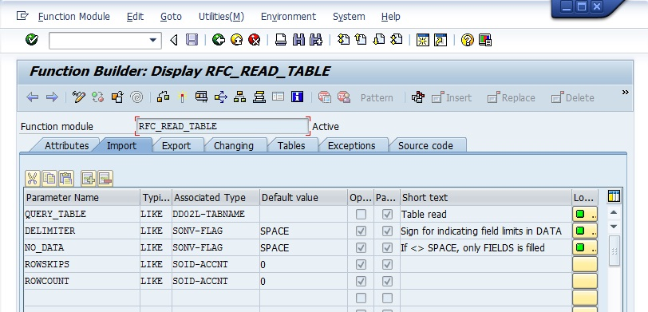
Overview
Master Data, Transactional Data, Configuration Data, Custom Z-Tables: these are various types of tables that store data around SAP. Each table is designed to hold specific types of data related to a particular module or aspect of the business.
How you access data from these tables in SAP can vary from use-case to use-case. MuleSoft provides various approaches to access SAP data including, but not limited to IDocs, Remote Function Calls/BAPIs, JDBC, OData, etc...
In this codelab, we're going to cover how to access data from SAP tables and Z-tables using the MuleSoft SAP Connector and without writing any Java or ABAP code. We'll be using the RFC_READ_TABLE function which is an out-of-the-box function module provided by SAP. You can also use BPP_RFC_READ_TABLE if you'd like but for the purpose of this codelab, we'll be using RFC_READ_TABLE.
What you'll learn
- How to expose data from SAP tables using the SAP Connector
What you'll need
- SAP ECC or S/4HANA
- SAP GUI
- Anypoint Studio
- SAP Connector
- SAP JCo libraries
Before we jump over to MuleSoft Anypoint Studio, let's look at a table in SAP that we'll be using for the codelab. Launch the SAP GUI application on your computer and log in to your SAP system with your user credentials.
Once you are logged in, in the command field at the top of the screen, enter the transaction code SE16N and press Enter or click on the Enter button.
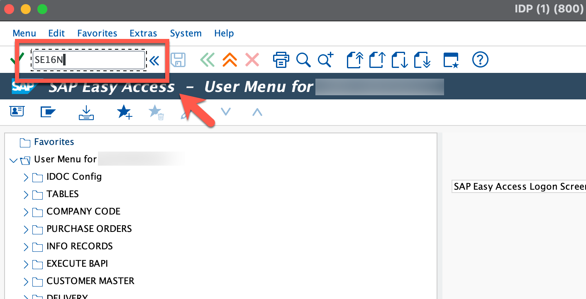
The General Table Display screen will appear. In the Table field, enter the table name KNA1 and click on the Execute button (or press F8) to execute the transaction. KNA1, which is a Customer Master table, stores customer-related information such as names, addresses, contact details, and financial data.
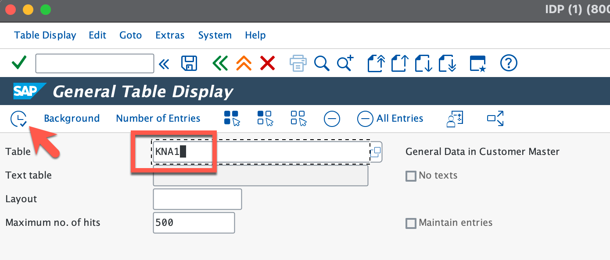
The KNA1: Display of Entries Found screen will display the contents of the KNA1 table. You can see the data in a tabular format with different columns representing different fields of the table.
For the function we're going to be calling, we need to get the technical field names. Click on the Details button above the table to bring up the Detailed Display window.
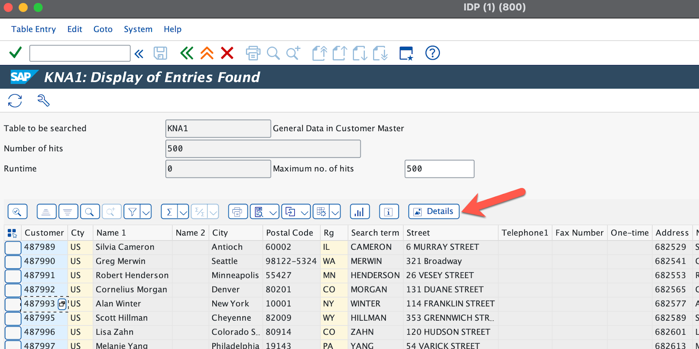
You'll need to copy the technical field names that you want to extract data from later.
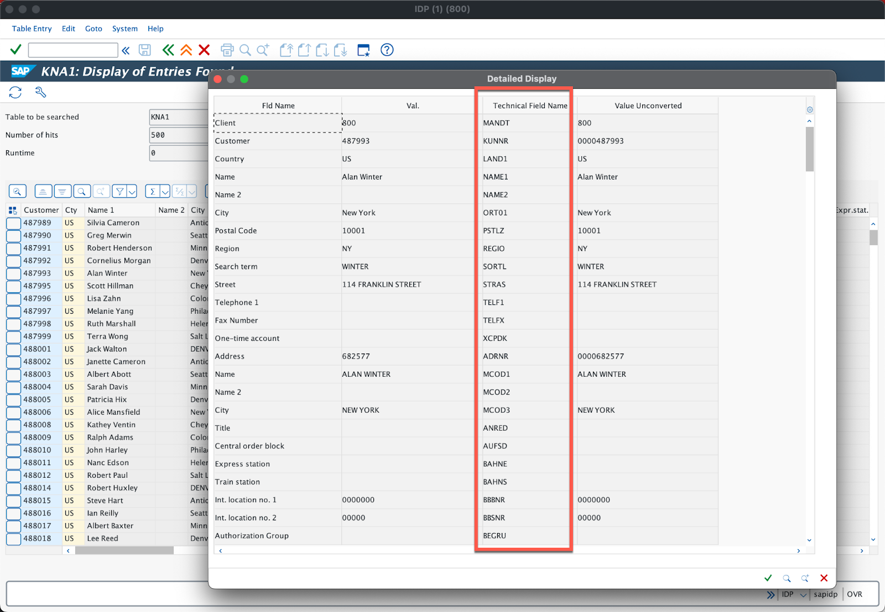
For this codelab, let's plan to use KUNNR, LAND1, NAME1, ORT01, PSTLZ, REGIO. If you're planning to pull data from an SAP Z-Table, just repeat the steps above with the Z-Table name and copy the technical field names that you'd like to display.
Now that we've seen the table and we know which columns we're pulling data from, we're going to set up a Mule flow to expose the KNA1 table as a simple REST API.
Create a new project
Open Anypoint Studio and create a new Mule Project

In the New Mule Project window, give the project a name (e.g. sap-customer-table), select a Runtime, and then click on Finish
Once the new project is created, you'll be presented with a blank canvas. In the Mule Palette on the right, click on HTTP and then drag and drop the Listener into the canvas.
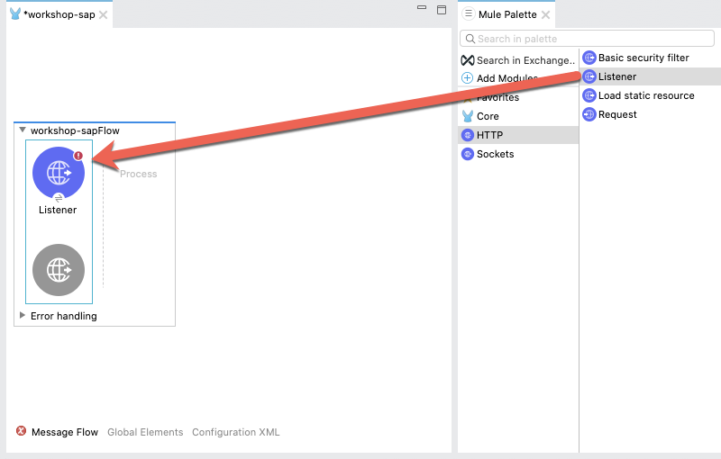
Add HTTP Listener Configuration
If the Mule Properties tab doesn't open, click the Listener icon and click on the green plus sign to create a new Connector configuration.

Under the General tab, and in the Connection section, take note of the port. By default this will be 8081. Go ahead and click on OK to accept the defaults and proceed.

Set Listener Path
Back in the Listener Mule properties tab, fill in the Path field with the value /customers.
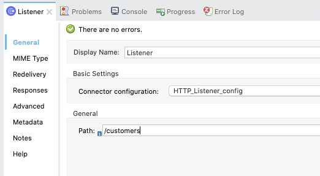
Add the SAP Connector
Back in the Mule Palette, we need to add the SAP Connector. Click on Search in Exchange
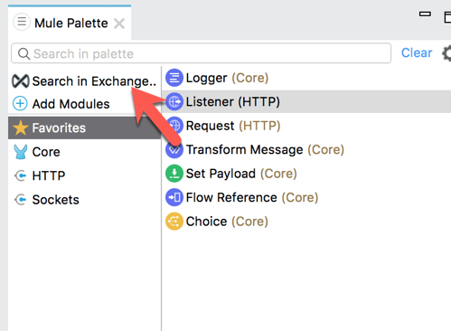
In the Add Modules to Project window, type in ‘sap' for the search term (1) In the Available modules (2) select SAP Connector - Mule 4 and click on Add (3) Click on Finish (4) to add the module to the project.

From the list of operations from SAP, drag and drop the Synchronous Remote Function Call onto the canvas. Place it after the Listener module.
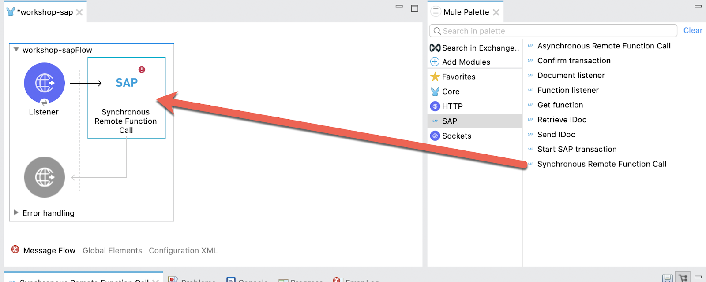
Create Configuration Properties File
For this guide, we'll configure properties in a separate configuration file. Right-click on the src/main/resources folder and select New > File and name the file app.properties
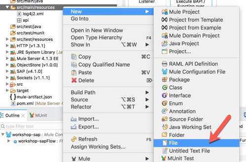
Copy and paste the following into the newly created file. Populate the properties with the credentials and settings for your SAP instance.
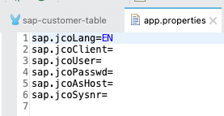
sap.jcoLang=EN
sap.jcoClient=
sap.jcoUser=
sap.jcoPasswd=
sap.jcoAsHost=
sap.jcoSysnr=In the canvas, click on Global Elements (1) and then click on Create (2)

In the Filter, type in ‘prop' (1) and select Configuration properties (2) and then click on OK (3)

In the Configuration properties, click on the browse file button (1).
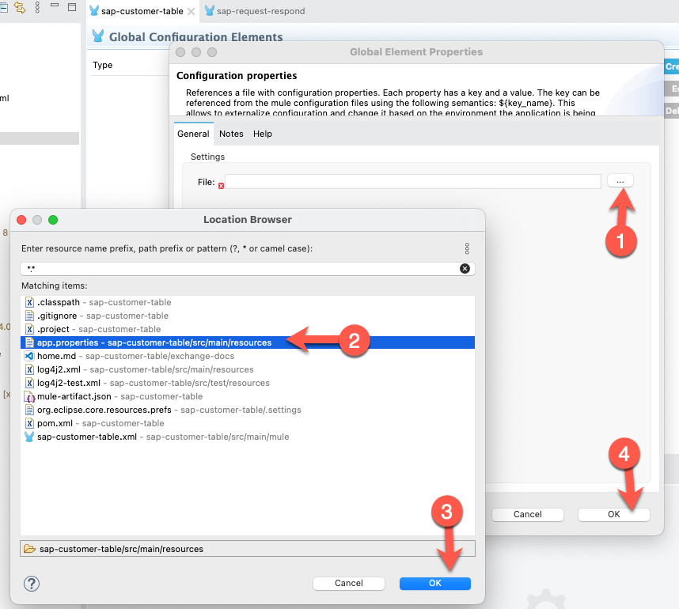
Locate and select the app.properties file you created (2) and then click on OK (3) Back on the previous window, click on OK to save your changes (4).
Add SAP Connector Configuration
Let's go back to the SAP Connector and use those properties to connect to SAP. In addition, you'll need to have the SAP JCo library files which you can download from the SAP Support website.
In the Synchronous Remote Function Call operation, click on the green plus sign to configure the Connector configuration.

Change the Connection drop-down to Simple connection provider
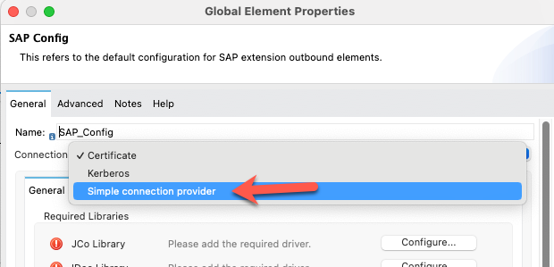
In the General tab, under Required Libraries, click on the Configure button next to the iDoc Library field. Select Use local file
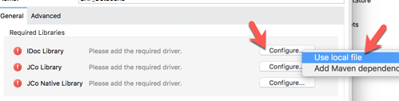
In the Choose local file, click on Browse and point it to the sapidoc3.jar file. Keep the default settings and click on OK

Back in the SAP Config window, there should be a green checkmark next to the iDoc Library field. Next, let's add the JCo Library. Click on Configure and select Use local file

In the Choose local file window, click on Browse and point it to the sapjco3.jar file. Keep the default settings and click on OK.

Back in the SAP Config window, there should be a green checkmark next to the JCo Library field.

Next, let's add the JCo Native Library. Click on Configure and select Use local file
For the JCO native libraries, they are platform specific. When you go to browse and select the files, be sure to change the dropdown to the specific extension you're looking for. Once you select the file, click on Open

JCo Platform-specific native libraries:
- Windows - sapjco3.dll
- Mac OS - libsapjco3.jnilib
- Linux - libsapjco3.so
Keep the default settings on the Choose local file window and click on OK

Back in the SAP Config window, all the required libraries should be green now.

Fill in the remaining fields with the corresponding property placeholders below.
Application Server Host: | ${sap.jcoAsHost} |
Username | ${sap.jcoUser} |
Password | ${sap.jcoPasswd} |
System Number | ${sap.jcoSysnr} |
Client | ${sap.jcoClient} |

Click on Test Connection to make sure everything has been configured correctly before clicking on OK.
Call RFC_READ_TABLE
Back on the Synchronous Remote Function Call tab, click on the refresh button next to the Function Name field. Once it refreshes, click on the magnifying glass icon next to it.

In the search field, type in RFC_READ_TABLE and then select the RFC_READ_TABLE item from the matching items list.
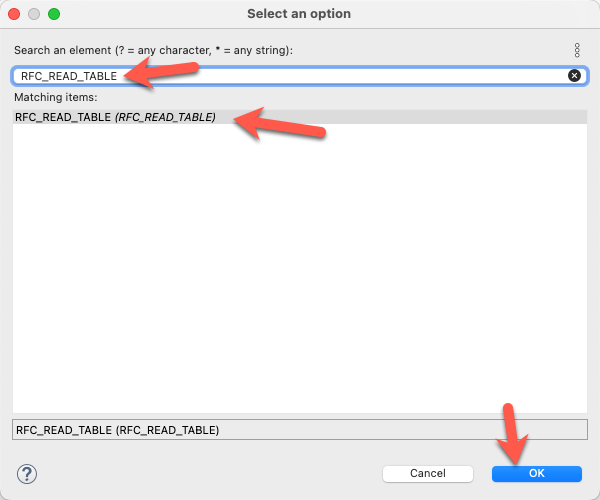
Click OK.
If you know the name of the BAPI you want to use from your system, you can type that into the Function Name field as well.
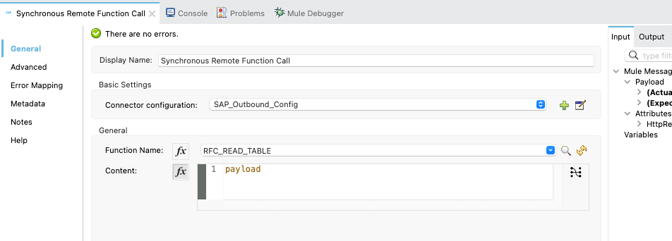
And this completes the configuration of the SAP Connector. In this next section you will formulate the request that needs to be passed into the BAPI/Function call. You'll use DataWeave to create the message.
Create DataWeave Script
Now that the SAP Connector is configured with the correct credentials and set with the function RFC_READ_TABLE we need to set up the request message to pass to the function.
In the Mule Palette, find and drag and drop the Transform Message component into the canvas. Drop it between the Listener and the Synchronous Remote Function Call operation
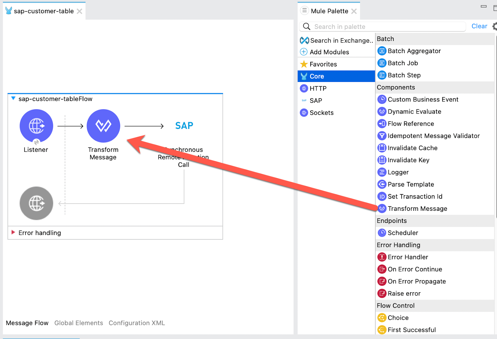
In the Transform Message tab, you can see how the component provides metadata around the output.
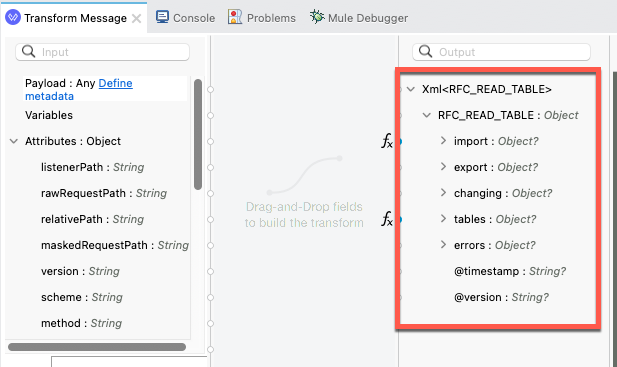
Let's make some modifications to the message. Copy and paste the script below into the script editor of the Transform Message component.
%dw 2.0
output application/xml
---
{
RFC_READ_TABLE: {
"import": {
DELIMITER: "|",
QUERY_TABLE: "KNA1",
ROWCOUNT: "10"
},
tables: {
FIELDS: {
row: {
FIELDNAME: "KUNNR"
},
row: {
FIELDNAME: "LAND1"
},
row: {
FIELDNAME: "NAME1"
},
row: {
FIELDNAME: "ORT01"
},
row: {
FIELDNAME: "PSTLZ"
},
row: {
FIELDNAME: "REGIO"
}
}
}
}
}It should look like the following:
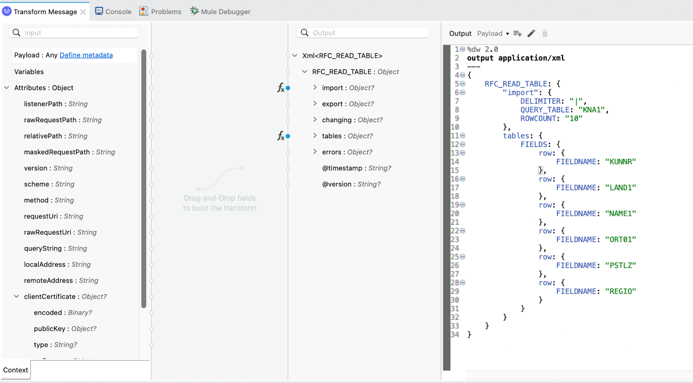
The import node defines the column delimiter, the table that we're retrieving data from in SAP, and the max number of rows to return. The QUERY_TABLE field can be the name of any table from SAP including a Z-table.
In the tables.FIELDS.row section, this is where we use the technical field names that we copied in the first step. These correspond to table columns that we want to retrieve from SAP.
In the next step we're going to configure how the data is presented back to the user once the call is successfully made to the RFC_READ_TABLE function and data is returned.
Create DataWeave Script for Response
Once the SAP Connector successfully calls the RFC_READ_TABLE function module, the data is returned as XML. Below is an example of what that XML data looks like:
<?xml version='1.0' encoding='UTF-8'?>
<RFC_READ_TABLE>
<import>
<DELIMITER>|</DELIMITER>
<NO_DATA/>
<QUERY_TABLE>KNA1</QUERY_TABLE>
<ROWCOUNT>10</ROWCOUNT>
<ROWSKIPS>0</ROWSKIPS>
</import>
<tables>
<DATA>
<row id="0">
<WA>0000487989|US |Silvia Cameron |Antioch |60002 |IL</WA>
</row>
<row id="1">
<WA>0000487990|US |Greg Merwin |Seattle |98122-5324|WA</WA>
</row>
<row id="2">
<WA>0000487991|US |Robert Henderson |Minneapolis |55427 |MN</WA>
</row>
</DATA>
<FIELDS>
<row id="0">
<FIELDNAME>KUNNR</FIELDNAME>
<OFFSET>000000</OFFSET>
<LENGTH>000010</LENGTH>
<TYPE>C</TYPE>
<FIELDTEXT>Customer Number</FIELDTEXT>
</row>
<row id="1">
<FIELDNAME>LAND1</FIELDNAME>
<OFFSET>000011</OFFSET>
<LENGTH>000003</LENGTH>
<TYPE>C</TYPE>
<FIELDTEXT>Country Key</FIELDTEXT>
</row>
<row id="2">
<FIELDNAME>NAME1</FIELDNAME>
<OFFSET>000015</OFFSET>
<LENGTH>000035</LENGTH>
<TYPE>C</TYPE>
<FIELDTEXT>Name 1</FIELDTEXT>
</row>
<row id="3">
<FIELDNAME>ORT01</FIELDNAME>
<OFFSET>000051</OFFSET>
<LENGTH>000035</LENGTH>
<TYPE>C</TYPE>
<FIELDTEXT>City</FIELDTEXT>
</row>
<row id="4">
<FIELDNAME>PSTLZ</FIELDNAME>
<OFFSET>000087</OFFSET>
<LENGTH>000010</LENGTH>
<TYPE>C</TYPE>
<FIELDTEXT>Postal Code</FIELDTEXT>
</row>
<row id="5">
<FIELDNAME>REGIO</FIELDNAME>
<OFFSET>000098</OFFSET>
<LENGTH>000003</LENGTH>
<TYPE>C</TYPE>
<FIELDTEXT>Region (State, Province, County)</FIELDTEXT>
</row>
</FIELDS>
<OPTIONS/>
</tables>
</RFC_READ_TABLE>Let's go ahead and transform that XML using DataWeave and output the customer data as JSON.
From the Mule Palette drag and drop a Transform Message module into the canvas. Place it after the Synchronous Remote Function Call operation.
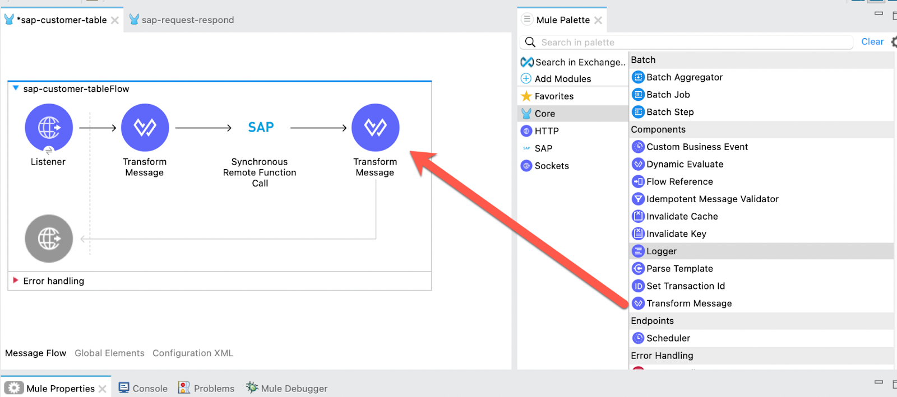
In the Mule Properties tab for the Transform Message component, modify the DataWeave script and paste in the following:
%dw 2.0
output application/json
---
payload.RFC_READ_TABLE.tables.DATA.*row map ((item, index) -> do {
var items = valuesOf(read(item.WA default "", "csv", {separator: "|", header:false})[0])
---
{
(
payload.RFC_READ_TABLE.tables.FIELDS.*row map ((row, index) ->
{
(row.FIELDTEXT): trim(items[row.@id as Number])
})
)
}
})The script takes each row and splits it by the delimiter which we set as ‘|'. Additionally it trims the fields and removes any blank spaces from the beginning and end of the string.
Run Project
Our next step is to test the flow we've built. In the Package Explorer, right click on the canvas and Run project workshop-sap
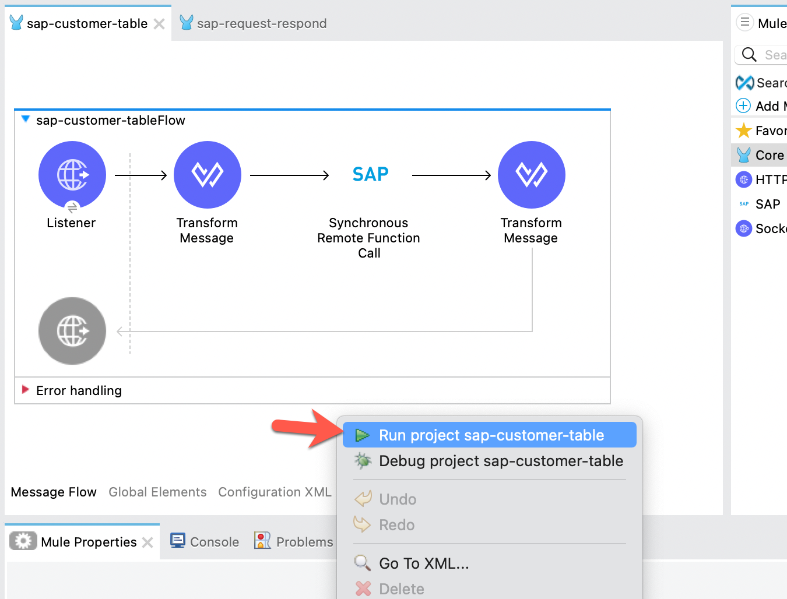
The Console tab should pop-up now. Wait for the status to show DEPLOYED before moving onto the next step.
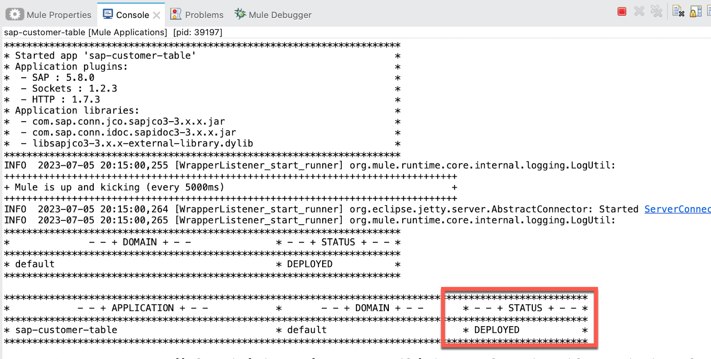
Test Flow
Let's test out our flow now. Switch to your web browser and enter the following URL:
http://localhost:8081/customersIf everything was configured correctly, you should see the following result in your browser. The Mule application that you just created allows you to send a request to an SAP to retrieve data from a table to get a list of 10 customers and return that list in JSON format.
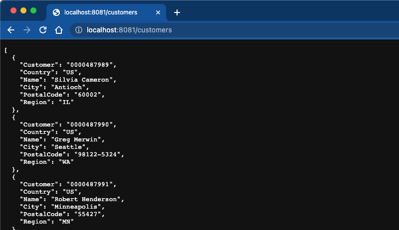
In this codelab, you learned how to use MuleSoft and the SAP Connector to expose data from an SAP table. Instead of writing Java or ABAP code, we leveraged the out-of-the-box function module, RFC_READ_TABLE, to read the KNA1 table and expose a simple REST API that displays customer data from SAP.